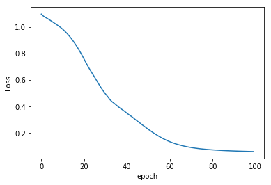

================ by Jawad Haider
03 - Basic PyTorch Neural Network¶
- Basic PyTorch Neural Network
- Perform standard imports
- Create a model class
- Load the iris dataset
- Plot the dataset
- Perform Train/Test/Split
- Prepare DataLoader
- Define loss equations and optimizations
- Train the model
- Plot the loss function
- Validate the model
- Save the trained model to a file
- Apply the model to classify new, unseen data
- Great job!
Basic PyTorch Neural Network¶
Now it’s time to put the pieces together. In this section we’ll: *
create a multi-layer deep learning model * load data * train and
validate the model
We’ll also introduce a new step: * save and load a trained model
Our goal is to develop a model capable of classifying an iris plant based on four features. This is a multi-class classification where each sample can belong to ONE of 3 classes (Iris setosa, Iris virginica or Iris versicolor). The network will have 4 input neurons (flower dimensions) and 3 output neurons (scores). Our loss function will compare the target label (ground truth) to the corresponding output score.
tensor([0,2,1,0,1])then we would encode them as:
tensor([[1, 0, 0],
[0, 0, 1],
[0, 1, 0],
[1, 0, 0],
[0, 1, 0]])
This is easily accomplished with
torch.nn.functional.one_hot().However, our loss function torch.nn.CrossEntropyLoss() takes care of this for us.
Perform standard imports¶
import torch
import torch.nn as nn
import torch.nn.functional as F
from torch.utils.data import Dataset, DataLoader
from sklearn.model_selection import train_test_split
import pandas as pd
import matplotlib.pyplot as plt
%matplotlib inline
Create a model class¶
For this exercise we’re using the Iris dataset. Since a single straight line can’t classify three flowers we should include at least one hidden layer in our model.
In the forward section we’ll use the
rectified
linear unit (ReLU) function
as our activation function. This is available as a full module
torch.nn.ReLU
or as just a functional call
torch.nn.functional.relu
class Model(nn.Module):
def __init__(self, in_features=4, h1=8, h2=9, out_features=3):
super().__init__()
self.fc1 = nn.Linear(in_features,h1) # input layer
self.fc2 = nn.Linear(h1, h2) # hidden layer
self.out = nn.Linear(h2, out_features) # output layer
def forward(self, x):
x = F.relu(self.fc1(x))
x = F.relu(self.fc2(x))
x = self.out(x)
return x
Load the iris dataset¶
| sepal length (cm) | sepal width (cm) | petal length (cm) | petal width (cm) | target | |
|---|---|---|---|---|---|
| 0 | 5.1 | 3.5 | 1.4 | 0.2 | 0.0 |
| 1 | 4.9 | 3.0 | 1.4 | 0.2 | 0.0 |
| 2 | 4.7 | 3.2 | 1.3 | 0.2 | 0.0 |
| 3 | 4.6 | 3.1 | 1.5 | 0.2 | 0.0 |
| 4 | 5.0 | 3.6 | 1.4 | 0.2 | 0.0 |
Plot the dataset¶
The iris dataset has 4 features. To get an idea how they correlate we
can plot four different relationships among them.
We’ll use the
index positions of the columns to grab their names in pairs with
plots = [(0,1),(2,3),(0,2),(1,3)].
Here (0,1)
sets “sepal length (cm)” as x and “sepal width (cm)” as
y
fig, axes = plt.subplots(nrows=2, ncols=2, figsize=(10,7))
fig.tight_layout()
plots = [(0,1),(2,3),(0,2),(1,3)]
colors = ['b', 'r', 'g']
labels = ['Iris setosa','Iris virginica','Iris versicolor']
for i, ax in enumerate(axes.flat):
for j in range(3):
x = df.columns[plots[i][0]]
y = df.columns[plots[i][1]]
ax.scatter(df[df['target']==j][x], df[df['target']==j][y], color=colors[j])
ax.set(xlabel=x, ylabel=y)
fig.legend(labels=labels, loc=3, bbox_to_anchor=(1.0,0.85))
plt.show()

Perform Train/Test/Split¶
X = df.drop('target',axis=1).values
y = df['target'].values
X_train, X_test, y_train, y_test = train_test_split(X,y,test_size=0.2,random_state=33)
X_train = torch.FloatTensor(X_train)
X_test = torch.FloatTensor(X_test)
# y_train = F.one_hot(torch.LongTensor(y_train)) # not needed with Cross Entropy Loss
# y_test = F.one_hot(torch.LongTensor(y_test))
y_train = torch.LongTensor(y_train)
y_test = torch.LongTensor(y_test)
Prepare DataLoader¶
For this analysis we don’t need to create a Dataset object, but we should take advantage of PyTorch’s DataLoader tool. Even though our dataset is small (120 training samples), we’ll load it into our model in two batches. This technique becomes very helpful with large datasets.
Note that scikit-learn already shuffled the source dataset before preparing train and test sets. We’ll still benefit from the DataLoader shuffle utility for model training if we make multiple passes throught the dataset.
trainloader = DataLoader(X_train, batch_size=60, shuffle=True)
testloader = DataLoader(X_test, batch_size=60, shuffle=False)
Define loss equations and optimizations¶
As before, we’ll utilize
Cross Entropy
with
torch.nn.CrossEntropyLoss()
For the optimizer, we’ll use a variation of Stochastic Gradient Descent
called
Adam
(short for Adaptive Moment Estimation), with
torch.optim.Adam()
Train the model¶
epochs = 100
losses = []
for i in range(epochs):
i+=1
y_pred = model.forward(X_train)
loss = criterion(y_pred, y_train)
losses.append(loss)
# a neat trick to save screen space:
if i%10 == 1:
print(f'epoch: {i:2} loss: {loss.item():10.8f}')
optimizer.zero_grad()
loss.backward()
optimizer.step()
epoch: 1 loss: 1.09568226
epoch: 11 loss: 0.98190653
epoch: 21 loss: 0.75652307
epoch: 31 loss: 0.49447522
epoch: 41 loss: 0.34981874
epoch: 51 loss: 0.22807853
epoch: 61 loss: 0.13547322
epoch: 71 loss: 0.09162075
epoch: 81 loss: 0.07378192
epoch: 91 loss: 0.06546164
Plot the loss function¶

Validate the model¶
Now we run the test set through the model to see if the loss calculation resembles the training data.
# TO EVALUATE THE ENTIRE TEST SET
with torch.no_grad():
y_val = model.forward(X_test)
loss = criterion(y_val, y_test)
print(f'{loss:.8f}')
0.06246195
correct = 0
with torch.no_grad():
for i,data in enumerate(X_test):
y_val = model.forward(data)
print(f'{i+1:2}. {str(y_val):38} {y_test[i]}')
if y_val.argmax().item() == y_test[i]:
correct += 1
print(f'\n{correct} out of {len(y_test)} = {100*correct/len(y_test):.2f}% correct')
1. tensor([-0.3355, 7.3630, 1.3783]) 1
2. tensor([0.2775, 8.1554, 0.4269]) 1
3. tensor([ 11.9969, 6.1847, -19.1976]) 0
4. tensor([-2.0187, 7.9664, 4.2447]) 1
5. tensor([-6.1348, 7.9516, 11.0913]) 2
6. tensor([-10.2635, 8.3101, 17.9998]) 2
7. tensor([ 12.0542, 6.4321, -19.2909]) 0
8. tensor([ 12.9507, 6.4819, -20.7540]) 0
9. tensor([-5.7723, 8.2435, 10.5083]) 2
10. tensor([-7.8867, 8.6126, 14.0731]) 2
11. tensor([-8.7055, 8.6074, 15.4337]) 2
12. tensor([ 11.6358, 5.8167, -18.6220]) 0
13. tensor([-8.1009, 8.2331, 14.3888]) 2
14. tensor([-2.0791, 7.7752, 4.3188]) 1
15. tensor([-6.0828, 8.3916, 11.0586]) 2
16. tensor([0.1360, 7.8660, 0.6409]) 1
17. tensor([-4.0875, 7.7217, 7.6642]) 2
18. tensor([ 13.1522, 6.5911, -21.0798]) 0
19. tensor([-1.5644, 8.0222, 3.4754]) 1
20. tensor([-6.2859, 8.9728, 11.4248]) 2
21. tensor([ 12.3859, 6.2571, -19.8275]) 0
22. tensor([ 13.8200, 7.0859, -22.1528]) 0
23. tensor([-8.8470, 8.3180, 15.6476]) 2
24. tensor([ 12.1979, 6.1264, -19.5260]) 0
25. tensor([-5.8084, 7.5468, 10.5340]) 2
26. tensor([-4.4526, 7.7876, 8.2865]) 2
27. tensor([-1.4284, 7.7786, 3.2328]) 1
28. tensor([ 0.5356, 7.5360, -0.0492]) 1
29. tensor([-5.8230, 8.1573, 10.5975]) 2
30. tensor([-5.2569, 7.7476, 9.6105]) 2
29 out of 30 = 96.67% correct
Here we can see that #17 was misclassified.
Save the trained model to a file¶
Right now model has been trained and
validated, and seems to correctly classify an iris 97% of the time.
Let’s save this to disk.
The tools we’ll use are
torch.save()
and
torch.load()
There are two basic ways to save a model.
The first saves/loads the state_dict (learned parameters) of the
model, but not the model class. The syntax follows:
Save: torch.save(model.state_dict(), PATH)
Load: model = TheModelClass(*args, **kwargs)
model.load_state_dict(torch.load(PATH))
model.eval()
The second saves the entire model including its class and parameters as
a pickle file. Care must be taken if you want to load this into another
notebook to make sure all the target data is brought in properly.
Save: torch.save(model, PATH)
Load: model = torch.load(PATH))
model.eval()
In either method, you must call model.eval() to set dropout and batch normalization layers to evaluation mode before running inference. Failing to do this will yield inconsistent inference results.
For more information visit https://pytorch.org/tutorials/beginner/saving_loading_models.html
Save the model¶
Load a new model¶
We’ll load a new model object and test it as we had before to make sure it worked.
Model(
(fc1): Linear(in_features=4, out_features=8, bias=True)
(fc2): Linear(in_features=8, out_features=9, bias=True)
(out): Linear(in_features=9, out_features=3, bias=True)
)
with torch.no_grad():
y_val = new_model.forward(X_test)
loss = criterion(y_val, y_test)
print(f'{loss:.8f}')
0.06246195
Apply the model to classify new, unseen data¶
Let’s plot this new iris in yellow to see where it falls in relation to the others:
fig, axes = plt.subplots(nrows=2, ncols=2, figsize=(10,7))
fig.tight_layout()
plots = [(0,1),(2,3),(0,2),(1,3)]
colors = ['b', 'r', 'g']
labels = ['Iris setosa','Iris virginica','Iris versicolor','Mystery iris']
for i, ax in enumerate(axes.flat):
for j in range(3):
x = df.columns[plots[i][0]]
y = df.columns[plots[i][1]]
ax.scatter(df[df['target']==j][x], df[df['target']==j][y], color=colors[j])
ax.set(xlabel=x, ylabel=y)
# Add a plot for our mystery iris:
ax.scatter(mystery_iris[plots[i][0]],mystery_iris[plots[i][1]], color='y')
fig.legend(labels=labels, loc=3, bbox_to_anchor=(1.0,0.85))
plt.show()

Now run it through the model:
with torch.no_grad():
print(new_model(mystery_iris))
print()
print(labels[new_model(mystery_iris).argmax()])
tensor([ 12.2116, 7.1285, -19.5247])
Iris setosa